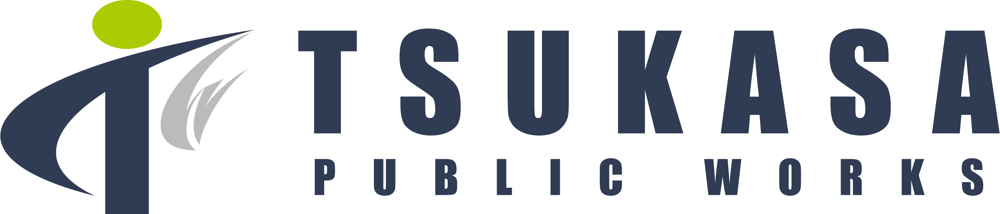
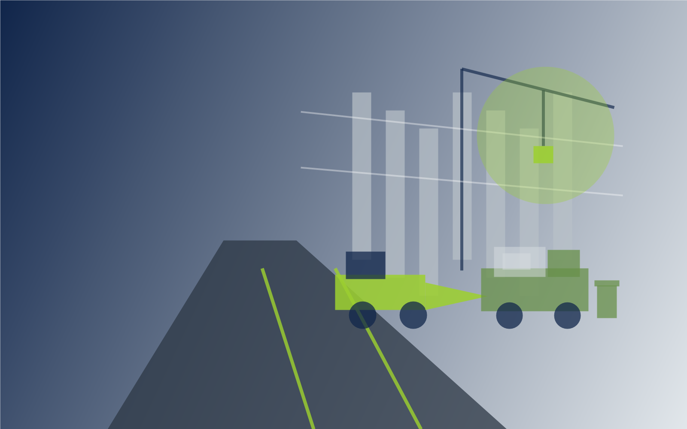

家庭系一般廃棄物の収集
神山町の委託事業として、家庭ごみの収集・運搬を行っています。 決められたルートを確実に回り、地域の暮らしを支えます。


Collection & Transport
神山町の委託事業として、家庭系一般廃棄物（家庭ごみ）の収集・運搬業務を行っています。 地域住民の暮らしに欠かせないライフラインの一つとして、安全・確実な収集体制を維持しています。
Service
神山町の委託事業として、家庭ごみの収集・運搬を行っています。 決められたルートを確実に回り、地域の暮らしを支えます。
車両点検や作業時の安全確認を徹底し、廃棄物を安全かつ確実に運搬します。 住民の方々に安心していただける体制を大切にしています。
清潔で安心な街の循環を支え、快適な生活環境づくりに貢献します。 地域に根ざした業務として、日々の積み重ねを大切にしています。
Community
自治体や地域のルールに沿って、収集日・収集場所・分別に配慮しながら業務を行います。
家庭ごみの収集は、地域住民の毎日に直結する大切な仕事です。安定した収集体制を維持します。
廃棄物や資源物の収集運搬を通じて、地域の環境保全と循環型社会づくりに貢献します。
Contact
工事・収集運搬・採用・会社に関することなど、どんな小さなことでもお気軽にお問い合わせください。